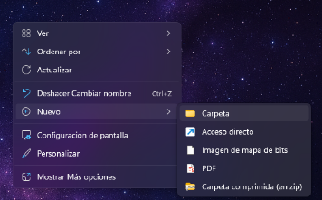
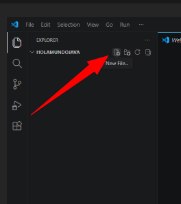
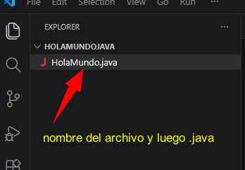
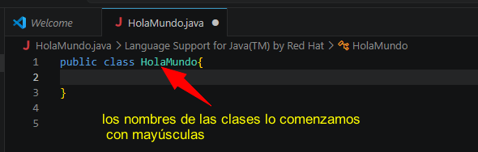

🎯 Objetivo
Aprender a crear y ejecutar un programa Hola Mundo en Java usando Visual Studio Code, sin conocimientos previos.
🧩 ¿Qué vamos a necesitar?
- Una computadora (Windows, macOS o Linux)
- Conexión a Internet
- Java (JDK)
- Visual Studio Code
🔹 Paso 1: Instalar Java (JDK)
Visita la página oficial de Java:
https://www.oracle.com/java/technologies/downloads/
Descarga JDK 17 o superior y sigue las instrucciones.
Verifica la instalación desde la terminal:
java -version
🔹 Paso 2: Instalar Visual Studio Code
Descárgalo desde:
https://code.visualstudio.com/
Instálalo con la configuración por defecto.
🔹 Paso 3: Instalar soporte para Java
- Abrir Visual Studio Code
- Ir a Extensiones
- Buscar Extension Pack for Java
- Instalar
🔹 Paso 4: Crear el proyecto
Crea una carpeta donde guardarás tu programa Java. Haz clic derecho en el escritorio y selecciona Nuevo → Carpeta.

Nombra la carpeta como:
HolaMundoJava
Luego abre la carpeta desde Visual Studio Code: Archivo → Abrir carpeta

🔹 Paso 5: Crear el archivo Java
Crea un archivo llamado:
HolaMundo.java


✍️ Paso 6: Escribir el código

public class HolaMundo {
public static void main(String[] args) {
System.out.println("Hola Mundo");
}
}
▶️ Paso 7: Ejecutar el programa
Opción 1: Presiona el botón ▶ en VS Code
Opción 2: Usa la terminal:
javac HolaMundo.java
java HolaMundo
✅ Resultado esperado
Hola Mundo